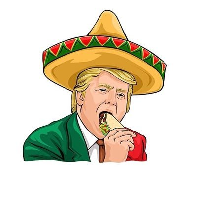

#1 · wufantouzi · 2026-06-01T17:24:54.000Z不要觉得我买了 hype 吹捧它实际情况是我已经卖飞了前面已经说过币圈这半年待下来有格局的都不是正常人了Ai 圈这半年待下来没格局的都不是正常人了hype 我是想要格局的但是又没做到6 号有解禁我提前卖掉看看有没有回调再考虑买回
 #4 · myminetrading · 2026-06-01T17:26:11.000Z不要緊市場一堆機會 又不是只有hypeQuoteBy the way, we’re also launching an English version of Mymine, making it easier for users around the world to access our platform.https://myminetrading.com